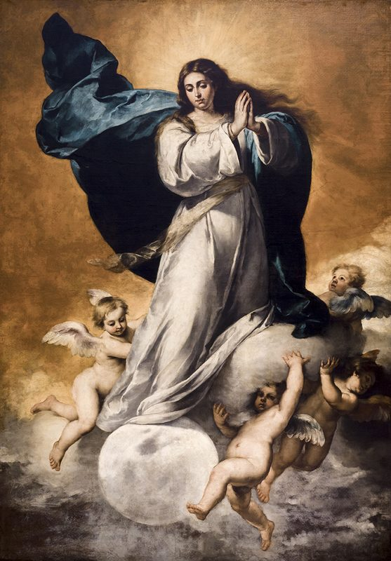
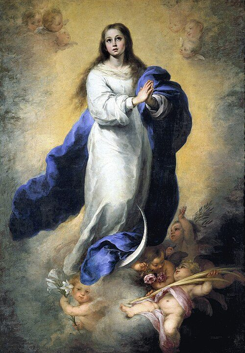
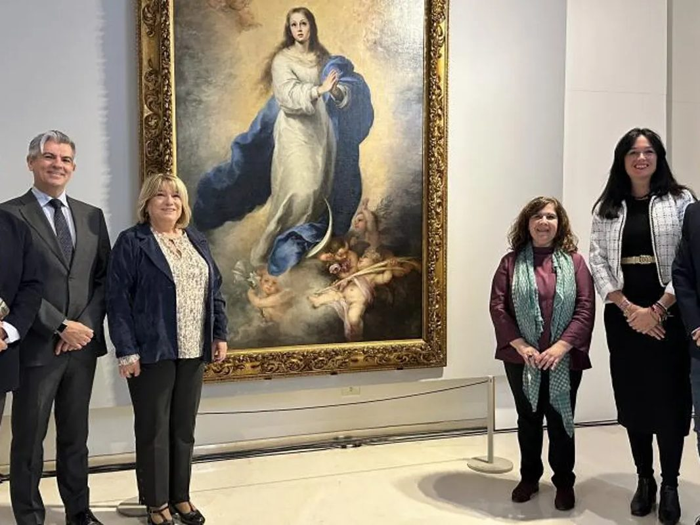
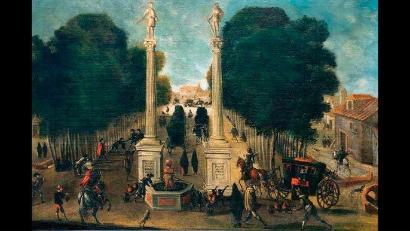

Una Inmaculada entre veinte

Murillo pintó la Inmaculada Concepción en al menos veinte ocasiones a lo largo de su vida. Ningún otro pintor de la historia regresó tan insistentemente a este tema mariano. Esta versión, la de mayor tamaño y la más lograda, data de hacia 1678, cuatro años antes de su muerte, cuando el artista había alcanzado la plena madurez de su estilo: colores cálidos y luminosos, contornos disueltos en luz, y una espiritualidad serena que ningún otro pintor supo capturar con tanta eficacia.
La obra fue pintada probablemente para la iglesia de los capuchinos de Sevilla, aunque el encargo preciso no está del todo documentado. Lo que sí está documentado es lo que ocurrió con ella durante la ocupación napoleónica de España.
«Una gran señal apareció en el cielo: una mujer vestida de sol, con la luna bajo sus pies y una corona de doce estrellas sobre su cabeza.»
La iconografía de la Mujer del Apocalipsis

La representación de la Inmaculada Concepción en la pintura española del siglo XVII sigue un programa iconográfico preciso, codificado en el tratado de Francisco Pacheco —suegro de Velázquez— en su Arte de la Pintura (1649) y basado en el capítulo 12 del Apocalipsis: la mujer vestida de sol, con la luna bajo los pies y coronada de doce estrellas, identificada desde los Padres de la Iglesia con María.
En la versión de Murillo, María aparece como una joven de unos quince años, con la mirada levemente elevada hacia el cielo. Bajo sus pies, la luna creciente. A su alrededor, varios ángeles y querubines sostienen flores y ramas de palma. La composición es de una armonía perfecta: el cuerpo de María forma un suave óvalo vertical, enmarcado por la luz celeste y los ángeles.
El color dominante —azul del manto y blanco de la túnica— es el esquema cromático que Pacheco había prescrito y que Murillo convirtió en canónico para toda la pintura hispanoamericana posterior. El azul no es ornamental: es teológico. Significa el cielo, la esperanza, la realeza celestial.
La Inmaculada de Soult: robo, viajes y regreso

En 1813, durante la ocupación napoleónica de España, el mariscal Jean-de-Dieu Soult saqueó numerosas obras de las iglesias de Sevilla. Esta Inmaculada fue una de las joyas de su botín. Soult la trasladó a París y la conservó en su residencia hasta su muerte en 1851. En 1852 fue adquirida y comenzó un peregrinaje diplomático hasta que el Estado español la recuperó en 1941 mediante negociación con el gobierno francés, cediéndola al Museo del Prado, donde hoy se exhibe en la sala dedicada a Murillo.
El nombre Inmaculada de Soult quedó como marca en la historia del arte, aunque también se la conoce como La grande Immaculée en la literatura francesa del siglo XIX.
Sevilla, ciudad de la Inmaculada

Para entender la obsesión de Murillo con este tema hay que entender Sevilla en el siglo XVII. La controversia sobre la Inmaculada Concepción —si María había sido concebida sin pecado original— dividía a teólogos y órdenes religiosas desde hacía siglos: los franciscanos la defendían; los dominicanos la negaban. En 1615, la polémica estalló en Sevilla con una violencia inusitada: sermones encendidos, procesiones callejeras, canciones populares, disturbios. El rey Felipe III intervino y envió embajadores a Roma para pedir una definición dogmática.
La definición no llegaría hasta 1854, con el papa Pío IX. Pero Murillo vivió en esa ciudad encendida de debate, y su pintura fue la respuesta artística a esa devoción popular ardiente. Cuando pintaba la Inmaculada no pintaba un tema teológico abstracto: pintaba el corazón de su ciudad.
Significado mariano
La elección de representar a María como una adolescente —joven, pura, sin el peso de los años— no es capricho estético sino teología visual: la mujer concebida sin pecado no conoce la pesadez de la naturaleza caída. La luz que la envuelve no viene del exterior sino de ella misma: es la gracia que la habita desde el primer instante de su existencia.
La devoción a la Inmaculada que Murillo pintó y propagó visualmente a lo largo de décadas influyó en la devoción popular de toda España y América Latina, y preparó espiritualmente el camino para la definición dogmática de 1854 y las apariciones de Lourdes de 1858, cuando la Virgen se identificó ante Bernadette Soubirous con las palabras: «Yo soy la Inmaculada Concepción.»